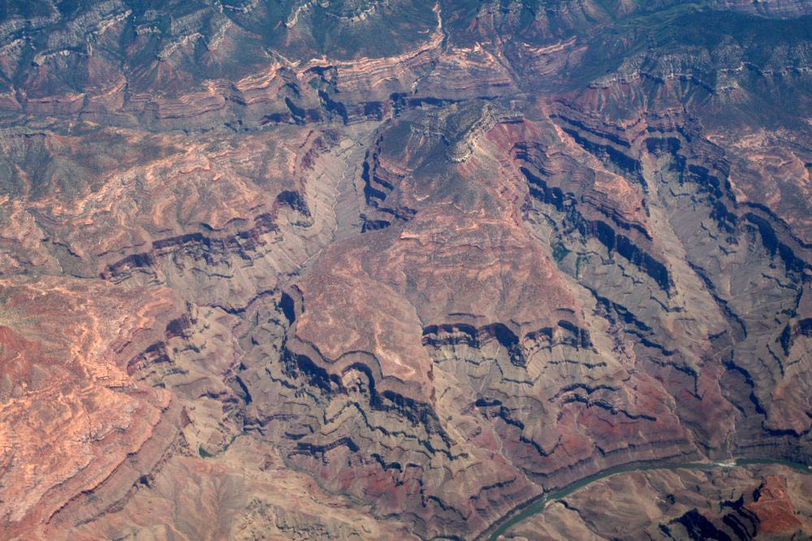
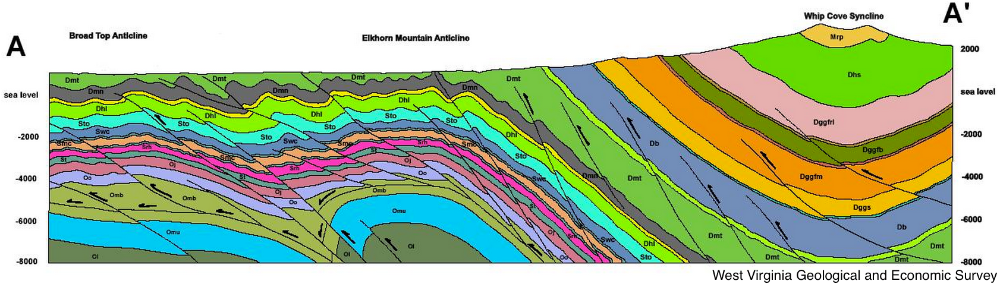

Outcrop Patterns
Rowan Cockett

Geologic Interpretation

Learning Objectives
- Learners will be able to identify the dip direction of planar layers in valleys.
Identify Dip Direction - Flat
Identify Dip Direction - Valley
Do it Yourself!
Relate dip direction to the 'V' in the valley.
Rule of V's
- Beds generally 'V' down a valley in the direction that they dip.
- Does not work when valley is steeper than the dipping layers.